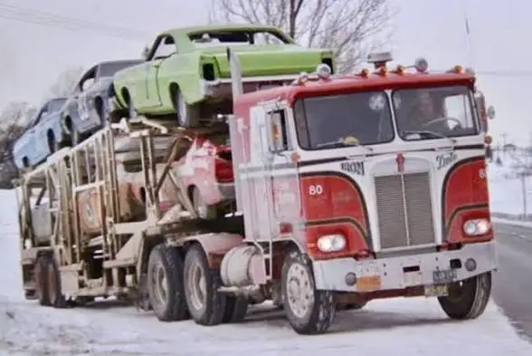

🧱 HIGH-BALLIN' (1978) — CERTIFIED MGC VG-10

⚖️ OFFICIAL CONSENSUS APPELLATE LEDGER
- Asset Title: High-Ballin' (1978) — The Official Trucker Exploitation Ledger
- Certified Grade: MGC VG-10 (Very Good / Noticeable Vintage Circulation Wear)
- Lower Court Jurisdiction: Judge Tina, Chief of Cult Classics
- Case File: #026
📜 THE FORENSIC NARRATIVE BREAKDOWN & RECOVERY
Tina walks up 👢👢to the steel bench 👗 tosses a beef jerky wrapper in the trash can 🗑️ and examines the specimen.
1. Noticeable Script Exhaust & CB Radio Static
- Under a cold, disciplined forensic review, High-Ballin’exhibits clear circulation wear and structural fatigue across its layout engine. The film attempts to forge a high-velocity, high-stakes independent trucker thriller centered on two gear-jamming buddies who square off against a ruthless hijacked-freight boss. While the premise carries immense historical atmospheric luster for collectors of 1970s diesel-fueled exploitation cinema, the script structure suffers from an uncalibrated second-act bottleneck.
2. Heavily Circulated Character Profiles & Diesel-Fueled Friction
- The execution represents a worn, moderately circulated specimen displaying sharp friction patterns under our strict 5x magnifying lens. Peter Fonda turns in a highly dedicated, charmingly rogue performance as the motorcycle-riding buddy, paired up with Jerry Reed’s elite gear-jamming charisma as the independent truck driver fighting to keep his rig.
- However, their powerhouse acting caliber frequently works against an unpolished script surface. The narrative logic experiences noticeable pacing scuffs due to predictable highway tropes, forced country-fried comedy beats, and repetitive hijacking sequences that stall the linear momentum of the thriller engine before it can hit top gear.
3. High-Velocity Stunt Metallurgy & Vintage Presentation
- Under closer inspection, the film avoids a lower G-tier allocation due to its authentic 1970s highway presentation. The production boasts genuine, heavy-duty truck stunts, high-impact chase physics, and an energetic country-rock atmosphere that keeps the visual layout highly engaging despite the narrative wear patterns. This raw, vintage action luster solidifies the asset right at the firm VG-10 line.
⚖️FINAL DECREE & CERTIFIED JUDGMENT
Tina grabs the heavy-iron claw hammer from its custom gold mount, her emerald eyes gleaming with absolute, high-velocity judicial focus!
- 🔨💥👗 Case Closed

• © 2026 MOVIE GRADING CONSENSUS. All Sovereign Rights Reserved.